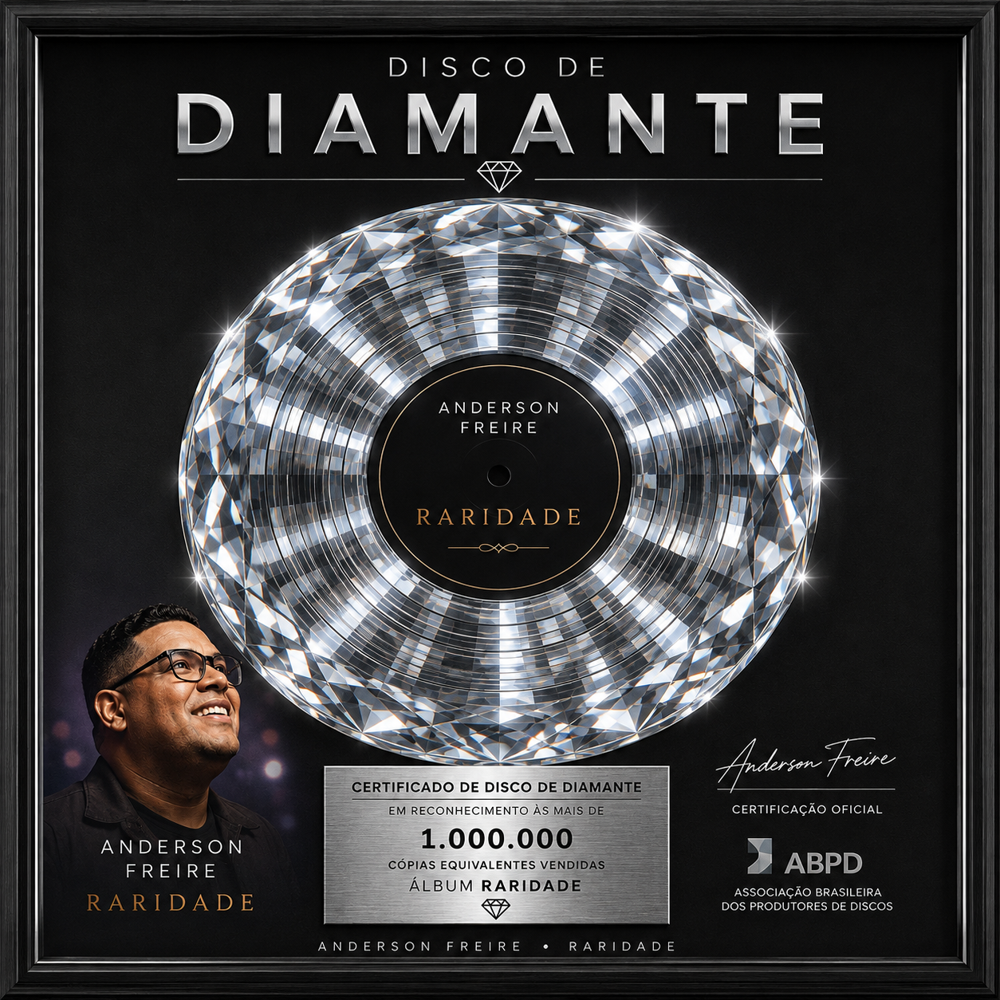

O cantor e compositor gospel Anderson Freire conquistou o Disco de Diamante com o álbum Raridade.A entrega oficial da certificação aconteceu em abril de 2015, durante uma apresentação especial no programa de televisão do Raul Gil. O prêmio foi concedido pela Associação Brasileira dos Produtores de Discos (ABPD) após o álbum ultrapassar a expressiva marca de 300 mil cópias físicas vendidas.Lançado originalmente em 2013 pela gravadora MK Music, o projeto se tornou um dos maiores fenômenos da história recente da música cristã contemporânea no Brasil. Além da faixa-título "Raridade", que foi a música gospel mais executada do país em 2014, o disco também emplacou outros grandes sucessos como "A Igreja Vem", "Acalma o Meu Coração" e "Efésios 6".